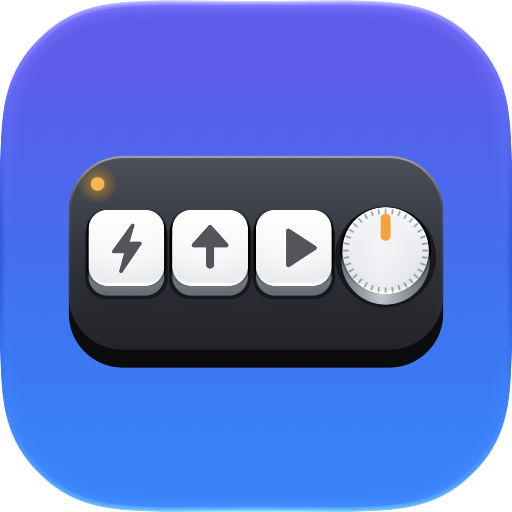

TinyDeck
TinyDeck
Your tiny macro pad,
finally at home on Mac.
Program every key and knob of your USB mini keyboard in a beautiful 3D editor. Shortcuts, media keys, lighting and more. No Windows needed.
Free · macOS 15 or later · Apple silicon and Intel
“Mac users: set it up on Windows first.” Not any more.
Everything your pad can do
Every key, your way
Click a key, press a shortcut, done. Or pick media keys, mouse actions and sequences.
Knob presets
Volume, media, scroll, zoom, brightness or undo/redo in one click.
Lighting
Effects and colours with a live 3D preview, applied instantly.
Test Keys
See exactly what your pad sends as you press and turn.
🧭 Recognises your pad
Detects the model and layout. Identify Pad counts keys, knobs and layers.
🔒 Private by design
No accounts, no tracking, no data collected. Sandboxed.
Works with popular mini keyboards
The CH57x family behind most “mini keyboard” and “macro keypad” pads. See the full list →
Get TinyDeck
Free on the Mac App Store.